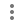
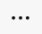
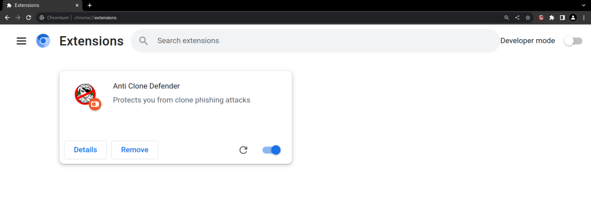
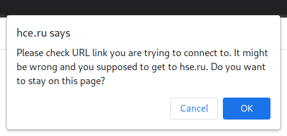
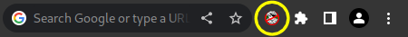
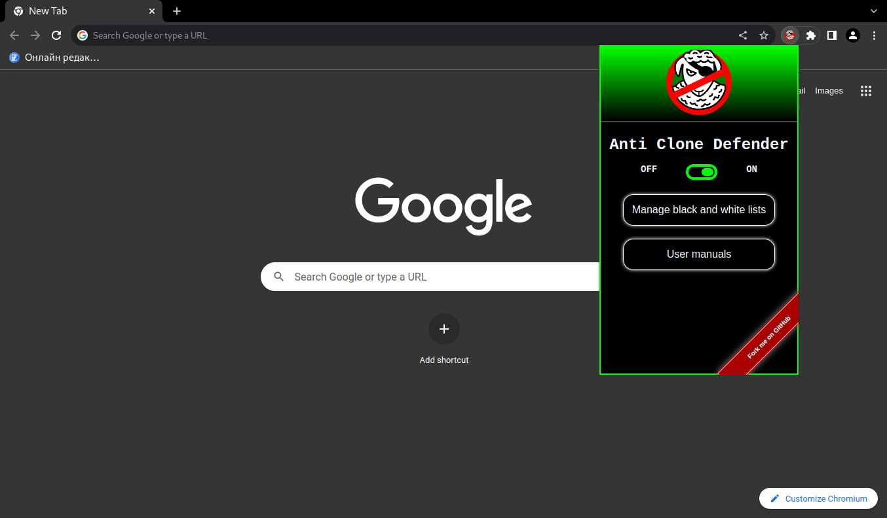
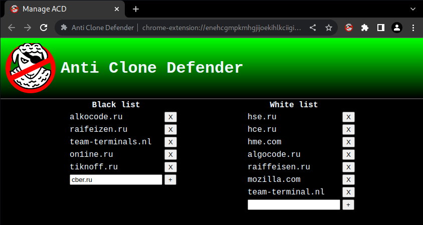

Functional overview
The Anti Clone Defender extension is designed to protect the user from getting on a phishing clone site. The mechanism of the extension is based on comparing links with the browser history, as well as with white and black lists of sites.
If the link that the user wants to follow is determined to be dangerous, the page loading stops and a dialog box appears in which confirmation is required from the user about his intention to follow the link. Depending on the user's response, the link is added to the blacklist or whitelist. The presence of a link in the whitelist indicates that it is safe for the user, and it is no longer checked. The presence of a link in the blacklist confirms its danger. Lists can also be changed manually in the List management window.
Anti Clone Defender considers a site suspicious if its domain name differs slightly from the domain name of the original site, so that the difference is not noticeable at a quick glance. Several letters may be swapped in this name, or one or two letters may be missing, etc.
The extension protects the user from the deplorable consequences of inattention when going to a clone site, which can master user authentication data and other private data. The extension acts on the user's side and does not depend on how much the owner of the original site has protected his resource from clone sites.
Installation Guide
For the extension to work, a Chromium browser (Google Chrome) must be installed on the computer., Chromium, Microsoft Edge, Yandex.Browser, Opera). There are three ways to install the extension in the browser: from store browser extensions, from the source code files folder and from the GitHub platform. From the store extensions the product is placed in a standard way, just like any other extension. Here's how the extension is put from the source code folder in different browsers:
- Yandex.Browser: To install an extension from a folder, you need to open the extensions page ( → Add-ons). Next, just open the standard file manager and drag the unzipped folder with the extension into the browser window. The extension will connect and start working.
- Google Chrome/Chromium: having a folder with the code, you can install the extension by going to the extensions page ( → More tools → Extensions). Next, you need to activate the "Developer Mode" in the upper right corner. The "Load unpacked" button appears in the upper left corner of the page. By clicking it, you need to select the extension folder and click "Open". The extension has entered into operation.
- Opera: You need to go to the extensions page ( → Extensions → Extensions). After activating the "Developer Mode" in the upper right corner, you need to click the "Load unpacked" button and select the unzipped folder with the extension using the system file manager. 
- Microsoft Edge: To install an extension from a folder, you need to go to extensions ( → Extensions → Manage extensions). Now you need to click on "Load unpacked" and select the folder with the extension. After confirming the selection, the extension will start working.
After installation, a window with buttons for configuring the extension appears in the browser extensions window. Using the "Details" button, you can view data such as the product version, the amount of memory used, and the installation source. Permission to access sites for the correct operation of the extension is not recommended to change, by default – "on all sites". The "Remove" button allows you to delete an extension if there is no need for its operation. And finally, the rightmost button allows you to turn the product on or off. When enabled, the extension runs in the background and monitors every update of browser tabs.
User's Guide
Several interface windows have been created for user interaction. If the link that the user wants to follow is determined to be dangerous, the page loading stops, and a dialog box appears in which confirmation from the user about his intention to follow the link is required. The output message contains the URL of a site similar in spelling that the user visited earlier.
If the user does not agree with the recommended blocking of access to the site, click confirmations. After that, the site opens, and the domain name is added to the whitelist. The presence of a name in the whitelist says that the link is safe for the user, and it is no longer checked. Pressing the cancel button will result in closing the site and adding the domain name to the blacklist. The presence of it in the blacklist confirms the danger of the link. In case of an attempt to access a site that is present in the blacklist, the second one appears warning window:

In this case, similarly to the previous one, pressing the confirmation button will lead to ignoring warnings, the site will open, the link's domain name will be removed from the blacklist and added to the white list list.
The next window of the interface of the program's interaction with the user appears when you click on the icon of the Anti Clone Defender program in the browser menu located to the right of the address bar:
This is a quick access window:
The "OFF/ON" button allows you to turn the extension on or off. The "Manage black and white lists" button opens the window for managing white and black lists of domain names. The "User manuals" button allows you to open the operating instructions. The white and black list management window looks like this:
Using this window, the user can, firstly, observe the automatically created lists of acceptable and unacceptable links to sites, and secondly, manually edit these lists in case there is additional information about existing malicious sites or about sites that do not need to be checked.
To add a domain name to any of the lists, enter it in the input field of the corresponding list and press the "Enter" key or the "+" button. To delete a domain name, you need to click the corresponding "×" button to the right of it.
Usage examples:
- Let's say your usual website for generating orders is park15logistics.com . In the mail correspondence, you receive a favorable offer, the term of which expires in the near future and it is proposed to issue it immediately. There is also a link to the website a15logistics.nl . With a quick glance, you can clearly see the name of the familiar company "15Logistics" (this site really existed and is in the archive of deleted phishing sites). But when you try to visit the site, the page loading stops and a warning dialog box appears. After reading the message, you understand that you usually used another website to contact this company. You just need to click the cancel button and the malicious site will not load and will be blacklisted.
- You are a site visitor hse.ru , when going to the site hce.ru you get a warning. When you click on the confirmation button, the site opens and is placed in the whitelist. Subsequently, its verification will not be carried out.
- Your employee got on a phishing site. You go to the list management window and blacklist a link to this malicious site. Accidental access to this site is excluded for you.
Distribution License
Anti Clone Defender is distributed under the MIT free and open source software license. Here is the text of this license:
MIT License Copyright (c) 2023 Artyzh Studio™ Permission is hereby granted, free of charge, to any person obtaining a copy of this software and associated documentation files (the "Software"), to deal in the Software without restriction, including without limitation the rights to use, copy, modify, merge, publish, distribute, sublicense, and/or sell copies of the Software, and to permit persons to whom the Software is furnished to do so, subject to the following conditions: The above copyright notice and this permission notice shall be included in all copies or substantial portions of the Software. THE SOFTWARE IS PROVIDED "AS IS", WITHOUT WARRANTY OF ANY KIND, EXPRESS OR IMPLIED, INCLUDING BUT NOT LIMITED TO THE WARRANTIES OF MERCHANTABILITY, FITNESS FOR A PARTICULAR PURPOSE AND NONINFRINGEMENT. IN NO EVENT SHALL THE AUTHORS OR COPYRIGHT HOLDERS BE LIABLE FOR ANY CLAIM, DAMAGES OR OTHER LIABILITY, WHETHER IN AN ACTION OF CONTRACT, TORT OR OTHERWISE, ARISING FROM, OUT OF OR IN CONNECTION WITH THE SOFTWARE OR THE USE OR OTHER DEALINGS IN THE SOFTWARE.